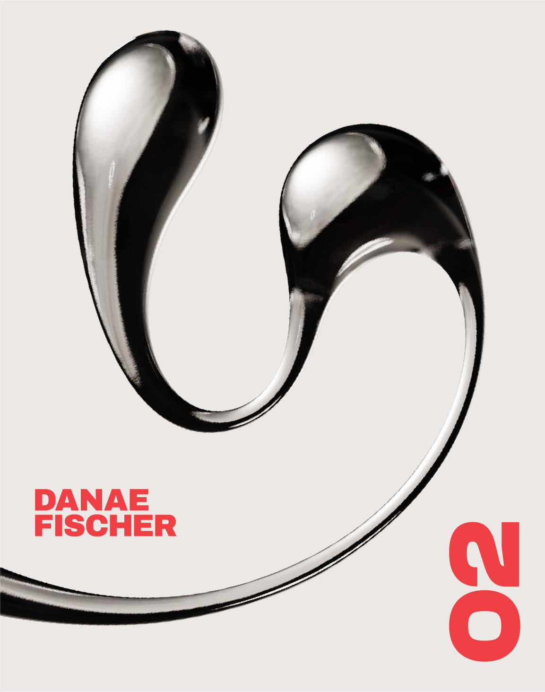
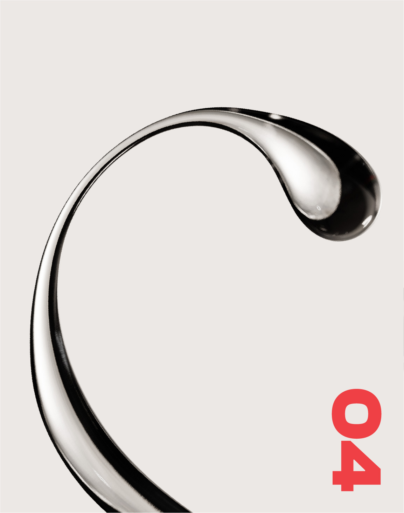
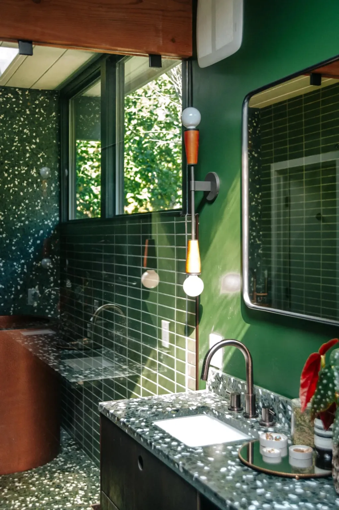
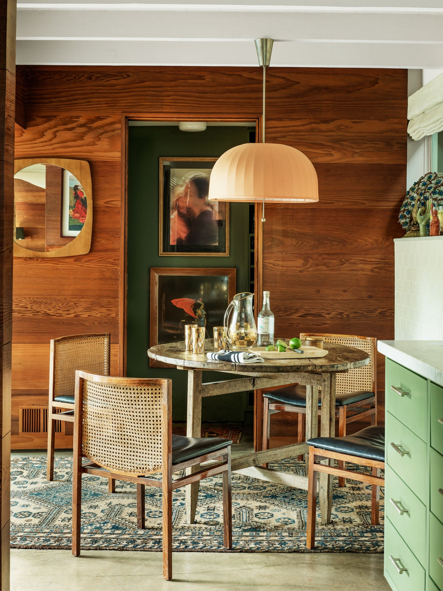
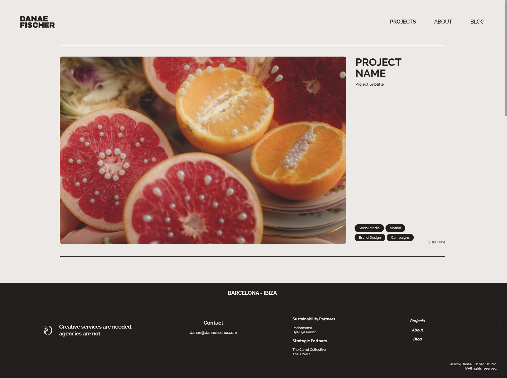

Danae Fischer is a creative director based in Ibiza and Barcelona. This project was comissioned as a way to consolidate her business by provinding a fresh new visual identity, along with a website showcasing the provided services of the newly launched Danae Fischer Creative Studio.
The objective was to design an identity that wouldn't take the spotlight from the client's projects, but instead highlight them while still exerting boldness and personality.
The logotype rocks a bold and geometric sans serif and is paired with a constrasting organic icon. This combination alludes to the attributes of the client's work, being graphic and bold but also sometimes experimental and willing to stand out.
The icon can be used separately from the logotype as a 3D render with a glass material. Being a 3D object, there is also the possibility to play with different materials and textures depending on the occasion. Zoomed-in shots of this element can be used in promotional content as referenced below.



The secondary palette utilizes earthy tones as highlight and accent colors. These are emerald and sage greens, with a touch of coral red.
The color palette is inspired by mid century modern architecture. The primary palette is an off white paired with a warm dark grey, creating a soft contrast without the harshness of stark black on white.

Web design also came into play as the second part of the project involved the creation of a portfolio-type web page for the client's studio. The web is responsive and has different pages for each subject, which include a home, blog, projects and about page.
